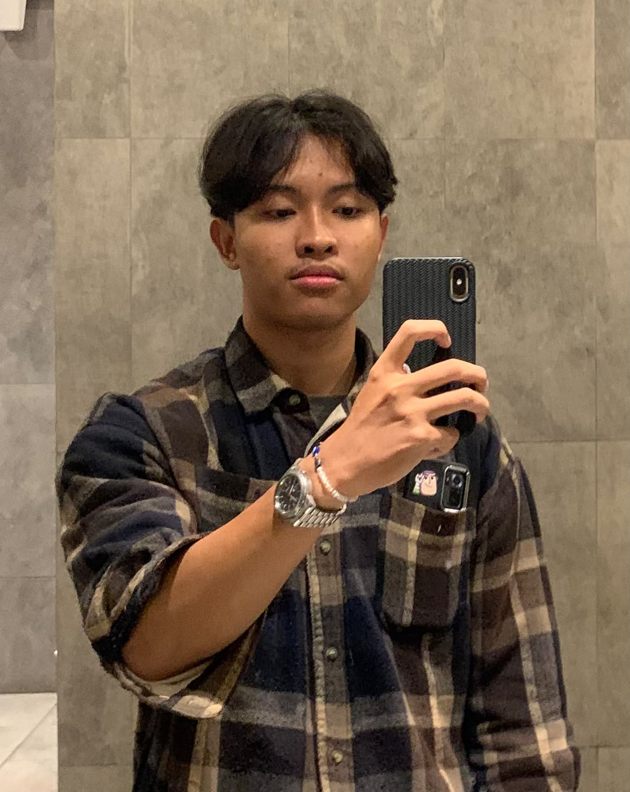

Mahasiswa Program Studi D-III Teknologi Informasi di Politeknik Negeri Madiun. Saat ini saya juga aktif dalam organisasi dan diamanahkan sebagai Wakil Koordinator Divisi PSDM Himpunan Mahasiswa Teknologi Informasi (HIMATIF). Saya memiliki minat yang besar dalam pengembangan teknologi, kepemimpinan, dan inovasi sistem.
Lihat Pengalaman Saya
Menyelesaikan program praktik kerja lapangan di PT Industri Kereta Api (Persero) pada divisi Human Capital & General Affair, departemen Manajemen Talenta & Training.
Mengikuti kompetisi pemrograman tingkat universitas yang diadakan oleh Universitas Sebelas Maret (UNS).
Menerima penghargaan sebagai relawan terbaik pada ajang Campus Expo Politeknik Negeri Madiun.
Menjadi panitia dalam kegiatan jalin relasi antara HIMATIF Politeknik Negeri Madiun dan HMIF Universitas Jember.
Mengikuti lomba inovasi teknologi yang diselenggarakan oleh Samsung.
Mengikuti workshop untuk mengembangkan keterampilan jurnalistik, broadcasting, dan pembuatan konten digital yang diselenggarakan oleh RRI Madiun.
Menjadi pemandu acara pada kegiatan Kuliah Tamu bertajuk "AI in Action: Pemanfaatan Kecerdasan Buatan di Dunia Kerja & Riset."
Mempelopori modernisasi tugas orientasi mahasiswa baru dari logbook fisik menjadi profil digital profesional (LinkedIn, GitHub, dan Portofolio).
Project Jemput merupakan sebuah platform digital yang dirancang untuk mempermudah antar jemput.
habibizakly47@gmail.com